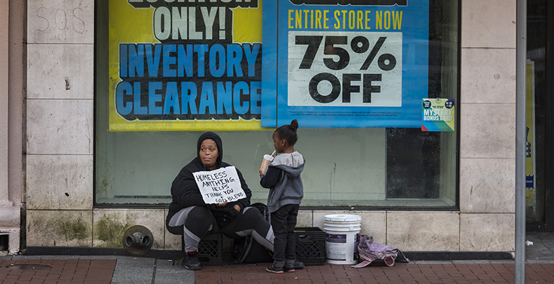

Which NYC Borough has Increased the most in Student homelessness?
By Manuel Cuellar, Dec. 16, 2021

Homeless mother and daughter (Credit: Getty)
After steady reductions from 2010 to 2016, homelessness has increased in the last four consecutive years. The increase in homelessness coincides with overall homelessness increase across the country. Even before the "pandemic crisis began," homelessness has continued its upward trend.
New York has seen an increase in student homelessness in specific boroughs like Brooklyn or Queens. The neighborhood Flushing in Queens grew its student homeless population by around 18% while Coney Island in Brooklyn grew it by almost 20%. Nonetheless, the Bronx is still the borough with the highest number of homeless students.
Choropleth map indicating student homelessness growth by borough (Credit: Manuel Cuellar)
In many instances, the city places homeless students far away from the schools they're attending. According to Randi Levine, policy advisor at Advocates for the Children of New York, "the City places more than 40% of families in a shelter in a different borough from their child’s school. This practice leads to long commutes, unnecessary school transfers, school absences, and barriers to participation in after-school and sports activities".
Advocates for the Children of New York, along with 40 more organizations, drafted a letter of recommendations to the upcoming mayor, Eric Adams, with concrete actions to alleviate and erradicate the New York student homeless crisis.